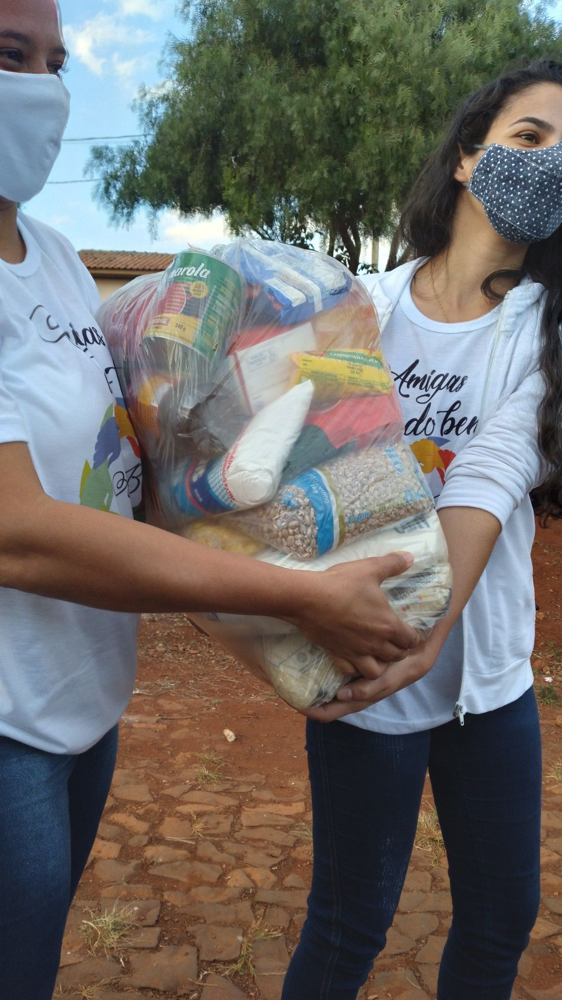

Conheça nossas iniciativas
A ONG Nova Vida desenvolve projetos voltados para ajudar pessoas em situação de vulnerabilidade e incentivar a participação da comunidade.
Campanha de Doação

Nossa campanha arrecada alimentos, roupas e produtos de higiene para famílias que precisam de apoio.
Materiais que podem ser doados
Doações recebidas nos últimos meses
Programa de Voluntariado
Os voluntários podem ajudar na organização das campanhas e participar das ações realizadas pela ONG.
Como participar
Para participar, basta realizar o cadastro através do nosso formulário.
Quero ser voluntárioOutras formas de contribuir
Além do trabalho voluntário, também é possível contribuir financeiramente para ajudar na manutenção dos projetos sociais.
Para mais informações sobre como ajudar, entre em contato conosco através dos dados disponíveis na página inicial.
Voltar para a página inicial